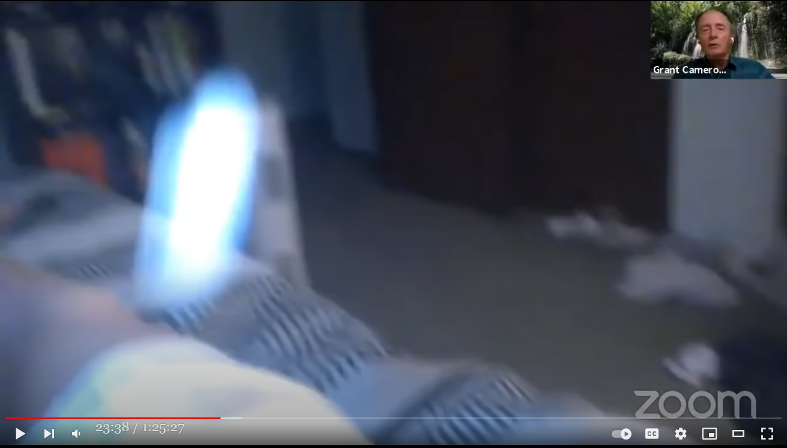

体に Orb が入り込み、腫瘍が快癒。その Orb の動画 （→ 確実に捏造 HOAX）

履歴
(2022-01-07) 追加。タイトルを一部変更。 ・旧：たぶん捏造 HOAX ・新：確実に捏造 HOAX (2021-08-21) 追加 (2021-03-17) 作成背景（過去記事部分）
(2022-01-07 begin)▼展開
前置
・Kathleen Marden（UFO 研究者）の元に寄せられた動画を、講演で取り上げている。ソースはカナダ人男性（M）。 ・この事例は下の過去記事でも取り上げた。 Kathleen Marden：光の玉が体に飛び込むシーンの動画。リンパ腫が治癒。（＋追加） (2018-09-25) ・過去記事の時点ではさして注意して動画を見ていなかったので捏造に気づかなかったが、今回は捏造に気づいた。手抜き
40:35-- ・数か月前に連絡してきたカナダの男（M）から得た情報。 ・M は首の後ろに大きな腫瘍ができ、病院で手術で除去する予定だった。深夜、横になっていたら、Orb が出現し、体に入り込んだ。次の日、目覚めたら腫瘍が 1/5 に縮小していた。Orb が治癒してくれた。切り出し静止画


コメント
・たぶんこの動画は捏造。その根拠は次のとおり。 (2022-06-27 begin) - 正体不明の orb が急接近してきたら、誰しも条件反射で避けようとする筈。だが、この撮影者はピクリともせず、最後まで動画の映像はブレていない。これはありえない。 - 最初のシーンも奇妙。撮影者は orb が出現する場所を予め予期し、予めカメラをその位置に向けていたように見える。 (2022-06-27 end)音声書写（自動生成）
▼展開
this individual who wants to remain 40:16 anonymous 40:17 uh contacted me a couple of months ago 40:20 and he had developed this like growth on 40:23 the side of his neck 40:24 and it was growing larger and larger and 40:27 at first i said well 40:28 go to your doctor maybe it's an 40:30 infection of some kind 40:32 he went he went on a course of 40:33 antibiotics it just kept growing larger 40:37 and finally there was a biopsy done and 40:39 he was taken before 40:41 a medical team up in canada they were 40:44 preparing 40:46 for for surgery 40:49 and they thought that it was probably 40:52 cancerous and so he was writing to me 40:56 he was afraid that he was going to die 40:59 and i said i'll tell you what let's 41:02 start 41:02 trying to heal you you ask for 41:06 healing i'll ask for healing i'll ask 41:08 other experiencers to ask for healing 41:12 and what i'm going to show you next is 41:15 what he videoed in his bedroom 41:18 at one o'clock in the morning 41:24 oh 41:27 okay 41:31 it's always played before here we go 41:37 no there's no sound do you see that or 41:40 would you like to see it again okay 41:45 okay let's get back to that screen and 41:50 it's not doing it again let's try this 41:53 okay watch very carefully 42:00 he had a cell phone he always keeps his 42:02 cell phone next to him 42:03 in bed let me tell you what happened 42:06 next 42:06 he slept until one o'clock in the 42:08 morning i mean in the afternoon 42:10 very very long sleep and when he woke up 42:15 he said something happened during the 42:16 night he sent me the video 42:18 which he gave me permission to use and 42:20 he said 42:22 my growth is smaller in all it was only 42:25 one-fifth the size that it had been and 42:28 by the time he went 42:30 in for surgery the tumor was completely 42:33 gone 42:34 and there were two necrotizing nodes 42:37 that was it amazing story講演動画（1:04:01）
The 60 Year Anniversary of the Hill E.T Encounter... The Inside Story!動画メモ
Today, 60 years after the UFO abduction of Betty and Henry Hill, more and more people are convinced that UFO's are real and that governments are covering up their existence. The 1961 abduction of the Hills stirred worldwide interest, primarily because of the book The Interrupted Journey, the subsequent media coverage and a 1975 TV movie, The UFO Incident. The case is mentioned in almost all UFO abduction books. Kathleen Marden, Betty Hill's niece, shares details from her discussions with Betty and from the evidence of the UFO abduction. She, also, looks at the Hill's riveting hypnosis sessions about their time onboard the spacecraft. This is an archived show Filmed by Contact in the Desert UFO Conference All content on this channel is licensed, and or produced by Zohar Entertainment Group/Awakening Expo/Phenomena Magazine.(2021-03-17)
(2021-08-21 begin)手抜き
・Grant Cameron が最近の動画（記録した筈だが見つからない）の中でチラリと言及していた。このカナダ人の男が、流行りのパンデミックによって死去したと。 (2021-08-21 end)
前置き
- つい最近のネット会議の中で Grant Cameron が、この同じ orb 動画をまた取り上げ、動画再生していた。Grant Cameron はこの動画シーンが orb による治療の最良の証拠だと主張している（*1）。 - 今回、その再生映像を再び目にして、上の過去記事の切り出し映像とは別の箇所で、決定的な捏造のボロを出しているシーンに気づいたので、記録しておく。 - ついでに、撮影状況を語った音声書写（自動生成）も追加しておく。（*1）
- このネット会議の目的は「orb は邪悪ではなく、善良だ」というアピールにある。その背景には、 ・Skinwalker ranch を訪れた軍情報関係者が悪霊に取り憑かれ、それが自宅まで憑いてきて様々な怪奇現象が多発した事例や、重篤な身体的悪影響が生じた事例を元に、 ・orb は邪悪な存在で、人間に酷い害悪を与えている と主張する最近の本（"Skinwalkers at the Pentagon"）や、George Knapp らの発言がある。 - それらの主張や発言に対する、UFO 業界の精神世界に偏向した主流派の中でもとりわけ急進派の一派（Grant Cameron, Alan Steinfeld, Nicole Sakach, Preston Dennett）の反発がこのネット会議の動機となった。 - それゆえ「orb は邪悪ではないよ、orb は善良だよ、ET が orb に変化した事例がいくつもあるよ、orb が人間を治癒した事例がたくさんあるよ」などと このネット会議ではアピールしている。 - 挙句の果てには「orb は善良な進化した意識体の化身だよ、orb が我々の本来の姿かも。そうだといいなぁ…」などと妄想炸裂で暴走しまくっているw手抜き
- 例の blue-orb が横になっている人間に飛び込むシーンに関する Grant Cameron の解説。音声書写（自動生成）
▼展開
21:41 and here's the famous healing orb so you 21:43 have the thing where the guy gets uh you 21:44 know zapped with the uh you know the 21:47 thing coming through the car or whatever 21:48 and i always maintain you've got to look 21:50 at your intention that if you're walking 21:52 around with special forces and guns at 21:54 skinwalker ranch get ready because it's 21:56 got to do with a lot what to do with 21:57 your intention so here he is and he had 22:00 cancer a number of times and he had 22:02 cancer had lymph node cancer he had this 22:04 huge uh tumor on his neck and he's going 22:07 for an operation on the tuesday this 22:09 happens on the sunday morning and i said 22:11 are we actually praying were you 22:12 actually talking to them to try to get 22:14 the healing and he said yes i was and 22:16 here's the the actual video that he has 22:18 of this um and he plays he's got it in 22:21 slow motion and it actually comes down 22:23 the wall in some of the videos if you've 22:24 got a good screen you can actually see 22:26 this thing come down the wall 22:28 and he plays it 22:30 so it'll come down between and he said 22:31 he was very embarrassed that his clothes 22:33 were on the floor all dirty clothes so 22:34 it comes down the wall you can actually 22:35 see it coming down the wall 22:38 it goes into his dirty clothes then it 22:39 starts to get big there it is you can 22:41 see him down there's a wall that's 22:42 coming into a dirty clothes at the thing 22:44 now you see it's starting to get big and 22:46 he comes up and he's filming he's 22:47 filming with this with his camera 22:49 and it comes up 22:51 wow 22:52 and it goes up 22:55 and it goes into his body and he starts 22:56 swearing and he had to pull the video 22:58 they had to pull the uh the video off or 23:00 the the audio off because he started 23:02 swearing and he was yelling or whatever 23:03 and then he he said he goes into the 23:05 bathroom shortly after that and this big 23:07 tumor is is on his neck is gone and so 23:11 he's he's he he goes to the oncologist 23:13 they're gonna do the operation on the 23:14 tuesday i think and he goes to 23:16 oncologist the oncologist said what 23:17 happened he said oh i just went away and 23:19 the oncologist said 23:20 it can't just go away what do you mean 23:22 just went away he said i think it went 23:23 away sunday morning 23:25 and he took it to his regular doctor who 23:27 knew what was going on and his doctor 23:28 kept making him play this over and over 23:30 and over again so you have this thing 23:32 you can talk about the story but but 23:34 this is this healing thing where uh he 23:36 had this uh and they they took the lymph 23:38 nodes out but there was no cancer they 23:39 were there was just uh small lymph nodes 23:41 they took them out so it was all over so 23:43 that's the uh the whole thing動画（1:25:27）
GRANT CAMERON Nice Orbs and Poking Bears捏造のボロが出たシーンの切り出し静止画
- 下の切り出しシーンは見逃しやすいが（実際、この orb 動画が捏造だと誰も指摘していない筈。少なくとも私は知らない）、どれも捏造の決定的な証拠になっている。


捏造の方法と、捏造のボロが出たシーンの図解
- 捏造の方法は、青白い収束光を放つ強い光源で部屋の壁や床に照らし、それを動画カメラで撮影した。この方法では、僅かだが どうしても光源とカメラの位置がずれる。そのため、壁や床などの段差のある箇所（例：壁と柱、壁と床、ベッドのシーツとその背景）では照らされた箇所の段差が、反射光の屈曲面として写り込む。 - 実際、上の切り出し静止画の段差の部分がそうなっている。 - 上の切り出し静止画を見れば分かる筈なので、図解は不要だとは思うが、つけておく。見ればすぐ分かるので、80% ルールは適用しようがない。 - その 1 - その 2- その 3
- その 4
(2022-01-07 end)
初出
体に Orb が入り込み、腫瘍が快癒。その Orb の動画 （→ 確実に捏造 HOAX：途中3） (2022-01-07)
この記事の完了度: